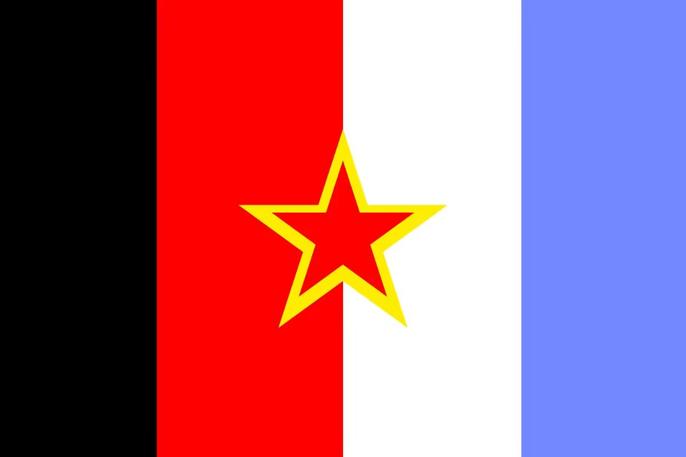

阿福迈尔联邦共和国是一个虚拟国家，建立于2023年8月3日，由塞斯特亚地区防御委员会，毛蛋共和国，西南社会主义共和国，加斯民民主共和国联盟联合成立。蓝(自由)、白(博爱)、红(鲜血)、黄(公正、法制)以及黑 (平等)以及阿福迈尔联邦共和国国徽“约克白玫瑰”组成。
我们的国家横跨地球（迫真）：首都新迈阿密（北美），加斯民（南美），塞斯特亚（南斯拉夫地区），西南（伊比利亚半岛），毛蛋（架空，太平洋）
我们的执政党是左翼进步革命国际
我们的国父是伟大的韩秦带统勇
如果你对我们的虚拟国家感兴趣，可以通过以下方式联系我们：
- Email：2028227443@qq.com
- QQ群组号码：462876324（新迈阿密）；442177457（毛蛋）；873325743（塞斯特亚）；816885376（西南）；586940347（加斯民）
友情链接：